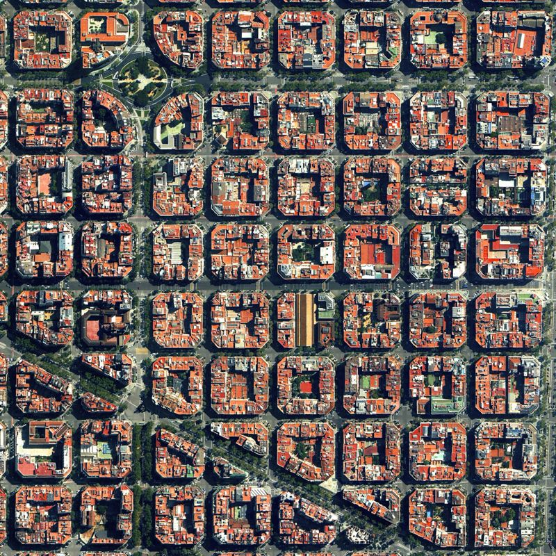
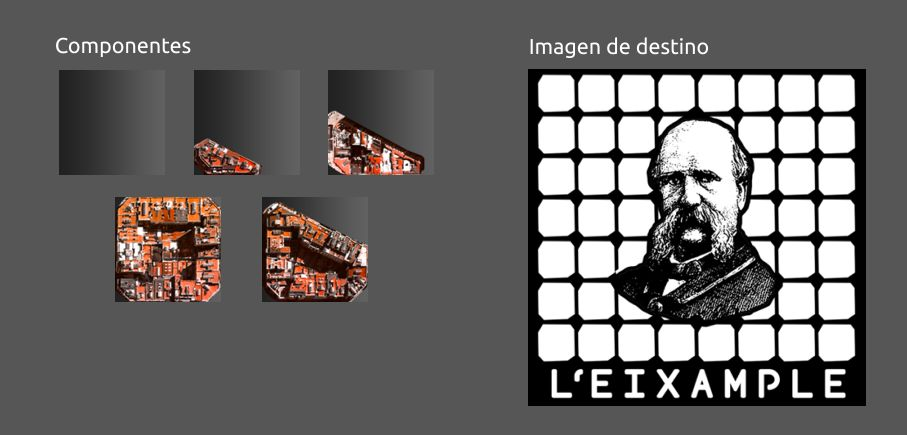

Coding Systems
A fines de 2023 tuve la suerte de hacer un viaje por algunas ciudades de Europa. Antes de viajar pensé que si se me daba la oportunidad de hacer algún taller o curso que me interese la iba a aprovechar. Hace bastante tiempo que miraba con ganas los cursos de Tim Rödenbroker sobre Processing y también al diseño de sistemas visuales flexibles teorizado por Martin Lorenz.
Era 8 de noviembre y creo que estaba en Edimburgo cuando vi que se iba a hacer este taller. Sería en Barcelona y como no tenía nada estrictamente planificado podía darme la flexibilidad de ir y hacerlo, además de que estuve ahí unas semanas antes y me encantó la ciudad. Pregunté si me prestaban una laptop en el taller y como me contestaron que sí, enseguida me anoté en el curso.
Desde Edimburgo fui a pasar unos días en Amsterdam, donde en la parada de migraciones me tocó un funcionario bastante insistente con mi procedencia. Haberme anotado al curso me sirvió para demostrar que no me iba a quedar en su ciudad. Finalmente los días 18 y 19 de noviembre de 2023 estuve en el taller de introducción a Processing llamado "Coding Systems" de Tim Rödenbroker y Martin Lorenz en Barcelona.
Durante todo el viaje tuve la suerte de conocer gente de muchos países, sobretodo de latinoamérica, con la que nos acompañamos y recorrimos diversas ciudades; pero no tenía mucha suerte con gente de Uruguay. Al final descubrí que para encontrarte un uruguayo tenés que ir al acontecimiento más específico que tenga que ver contigo. Fui a ver un partido del Barcelona y lo más despistado me vengo a sentar al lado de una pareja de uruguayos. Fútbol, era evidente. En Amsterdam fui a ver tocar a Juan Wauters. La fui a buscar, claro, a la uruguayidad. Me fui sorprendido de ver cómo se baila Jaime Roos en tierras holandesas. Por supuesto que a dónde más me iba a encontrar con un uruguayo que en el acontecimiento más específico de todo el viaje. Un diseñador gráfico de mi edad, que vivió cerca de mi barrio y que incluso tenemos personas en común. Esteban, diseñador gráfico y animador, un capo. Gracias por compartir esos mates y tiempo estando tan lejos.
El ejercicio fue modificar los componentes gráficos de un código ya escrito en processing. Dicho código establecía una especie de animación con el movimiento del mouse que componía una imagen de destino a partir de unos componentes (assets) que a medida que se multiplicaba su escala, formaban la imagen con mayor definición. Si bien el código estaba escrito (ya que era un curso introductorio) teníamos el desafío de tomar libremente el rumbo que nos dispare nuestra creatividad.
En mi caso lo primero que surgió fue en recrear la ciudad de Barcelona (o más bien el barrio L'Eixample) desde las figuras de las manzanas urbanas, lo que es conocido como el Plan Cerdá, esa cuadrícula casi perfecta que forman las manzanas de la ciudad.
Pensé en el funcionamiento de este código en processing como si fuese la impresión serigráfica, como si la imagen destino fuera la matriz de impresión y los componentes fuesen las tintas, que van ordenados de la más oscura a la más clara. Luego de varias pruebas y errores, intenté armar los componentes y la imagen de destino sin perder mucho tiempo.
A continuación el resultado del ejercicio.

Si bien no fue fácil debido al poco tiempo disponible para desarrollar el ejercicio, veo que no aproveché el uso de la escala de grises en la imagen de destino para el uso de los diversos componentes. Pero el hecho de completarlo satisfactoriamente abrió mi mundo hacia processing y entenderlo como algo que no era imposible de aprender para alguien afuera del mundo de la programación. Me queda una herramienta a la que puedo recurrir en cualquier momento para experimentar y hacer pruebas en tiempos muy cortos, para resultados que en otros softwares tomarían muchísimo tiempo de elaboración. Además de que es tecnología de software libre.

Fuente: Instagram de Tim Rödenbroker
Me llevo un recuerdo feliz de mi breve estadía en Barcelona en la que pude conocer personas afines de muy diversos rincones del mundo, como Kiunnei, de Siberia, que muy amablemente me invitó a recorrer la facultad donde estudia, Elisava; al igual que a referentes en el mundo del diseño y la comunicación visual como a Tim, y a Martin, que ya hace tiempo lo veníamos repasando en nuestra propia FADU, por su libro de sistemas visuales flexibles. Ojalá podamos volver a coincidir pronto. Ojalá esta vez sea en estas tierras.
Por lo pronto ya pude usar esta herramienta en un proyecto de diseño: 3er Encuentro de Construcción con Tierra.